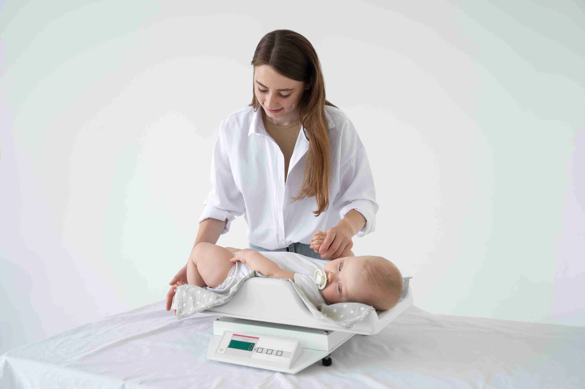

How to Track Your Child’s Growth: Height, Weight & Development Milestones | Gani Hospital Ramanathapuram
Tracking your child’s growth is one of the most important parts of parenting. It helps ensure your child is developing properly in terms of height, weight, brain development, emotional behavior, and physical strength. At Gani Hospital, Ramanathapuram, our pediatric specialists provide complete child growth monitoring using WHO growth standards and advanced child health evaluation methods. Regular monitoring helps detect concerns early and supports healthy long-term development.

Introduction to Child Growth Monitoring
Child growth is a combination of physical, mental, emotional, and social development. Every child grows at a different rate, but regular tracking ensures they remain within a healthy range for their age.
Growth monitoring helps detect early signs of nutritional deficiency, hormonal imbalance, developmental delay, poor immunity, or weight-related issues.
At Gani Hospital Ramanathapuram, we provide regular pediatric checkups, growth assessment, and personalized guidance for safe and healthy child development.
Early support and timely medical advice can improve confidence, learning ability, and overall health outcomes.
Why Child Growth Tracking is Important
- Identifies malnutrition at an early stage
- Detects obesity and underweight issues
- Monitors brain and cognitive development
- Ensures proper bone growth and strength
- Helps early diagnosis of medical conditions
- Supports emotional and behavioral development
- Improves overall child health outcomes
Regular monitoring is recommended every 3–6 months for infants and young children, or as advised by a pediatrician.
How Children Grow: Understanding Growth Phases
Infant Stage (0–1 Year)
- Rapid weight and height gain
- Brain development is very fast
- Begins rolling, sitting, crawling
- Strong need for nutrition and sleep
Toddler Stage (1–3 Years)
- Steady physical growth
- Language development begins
- Improved motor skills and walking
- Growing independence and curiosity
Preschool Stage (3–5 Years)
- Social and emotional development
- Improved communication skills
- Better coordination and activity control
- Learning habits and memory growth
Key Growth Measurements Every Parent Should Track

Height (Length Growth)
Height reflects bone development and overall physical growth. A slow increase in height may indicate nutritional or hormonal issues.
Weight
Weight shows overall health and nutrition. Sudden weight loss or gain should always be checked by a pediatrician.
Head Circumference (Infants)
This measurement is important for monitoring brain development during early childhood.
BMI for Children
BMI helps doctors understand whether a child is underweight, normal, or overweight based on age and growth pattern.
Development Milestones
Milestones such as walking, speaking, social interaction, and learning skills are equally important indicators of growth.
Warning Signs of Growth Problems
- Slow height or weight gain compared to age
- Delayed speech or walking milestones
- Frequent illness or weak immunity
- Poor appetite or feeding issues
- Low energy or fatigue
- Behavioral or learning difficulties
- Poor concentration or social delay
If any of these signs are noticed, consult a pediatrician at Gani Hospital immediately.
How Doctors at Gani Hospital Track Growth
At Gani Hospital Ramanathapuram, pediatricians use WHO growth charts and modern diagnostic tools to track child development accurately.
- Height-for-age growth chart analysis
- Weight-for-age monitoring
- BMI-for-age evaluation
- Developmental milestone assessment
- Nutritional status evaluation
- Medical screening when required
We ensure early detection of any growth abnormalities and provide personalized treatment plans for every child.
Nutrition Tips for Healthy Child Growth
- Include protein-rich foods like eggs, milk, pulses
- Give fresh fruits and vegetables daily
- Ensure proper hydration with clean water
- Avoid junk food and sugary snacks
- Maintain regular meal timing
- Encourage outdoor physical activities
- Ensure adequate sleep every night
Proper nutrition plays a key role in brain development, immunity, bone strength, and physical growth.
Services at Gani Hospital Ramanathapuram
- Child growth monitoring & checkups
- Pediatric consultation
- Vaccination services
- Nutrition and diet counseling
- Child illness treatment
- Emergency pediatric care
- Development milestone guidance
Tips for Parents to Support Healthy Growth
- Follow vaccination schedule regularly
- Encourage active play and exercise
- Limit screen time based on age
- Provide emotional support and attention
- Maintain proper sleep routine
- Schedule regular pediatric checkups
Conclusion
Monitoring your child’s growth regularly ensures healthy physical, mental, and emotional development. Early detection of growth issues can prevent long-term complications and improve future health.
Tracking height, weight, milestones, nutrition, and behavior gives parents confidence and helps children reach their full potential.
For expert pediatric care and child growth monitoring in Ramanathapuram, visit Gani Hospital and ensure your child gets the best medical support.
Frequently Asked Questions
How often should I track my child’s growth?
Every 3–6 months is recommended for infants and toddlers.
Is slow growth always a problem?
Not always, but it should be evaluated by a pediatrician.
Can diet improve height and growth?
Yes, proper nutrition plays a major role in healthy development.
When should I visit Gani Hospital?
If you notice delays in growth, appetite, weight, or development milestones.
Do genetics affect child growth?
Yes, genetics can influence height and body build, but nutrition and health are also important.